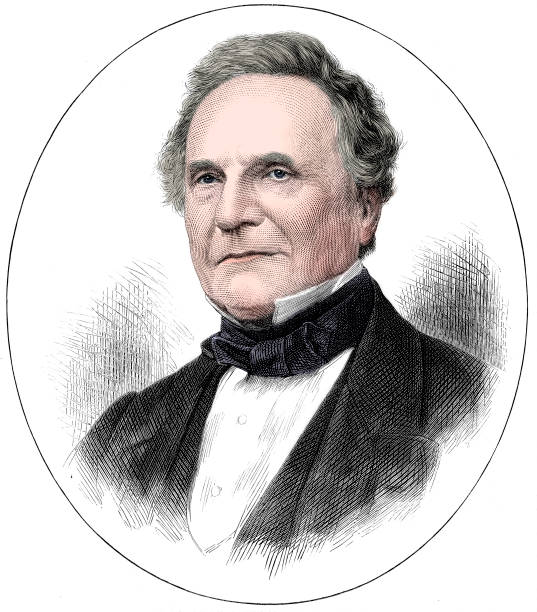

Como mencionado anteriormente na Biografia, Ada trabalhou em colaboração com o matemático Charles Babbage, que projetou a Máquina Analítica, um dispositivo mecânico que tinha a capacidade de executar cálculos complexos. Ada reconheceu o potencial da máquina além de apenas fazer cálculos matemáticos, e imaginou que ela pudesse ser programada para criar gráficos, música e até mesmo arte. Essa visão de Ada foi fundamental para o avanço da ciência da computação.
Em 1842, Charles é convidado para participar de um seminário na Universidade de Turim sobre sua máquina analítica. O engenheiro e matemático Luigi Menabrea, que estava presente, fez do seminário um artigo em francês para a comunidade científica da época e sua transcrição foi posteriormente publicada na Bibliothèque Universelle de Genève.
Após a publicação, Babbage pediu a Lovelace para traduzir o artigo para o inglês e adicionar suas próprias notas. Um ano depois, Lovelace concluiu a tradução, resultando em um texto maior que o original, e que foi publicado no "The Ladies' Diary" e no Memorial Científico de Taylor sob as iniciais "AAL". As notas de Ada foram classificadas de A a G, e a nota G é conhecida como o primeiro programa (algoritmo) de computador do mundo. Era um algoritmo que computava os números de Bernoulli, e isso rendeu a ela o título de primeira programadora da história. Além do algoritmo, em suas notas Ada prevê que a invenção de Babbage não só poderia computar números, mas poderia também criar imagens.
A linguagem de programação Ada foi criada em homenagem à Ada Lovelace pelo Departamento de Defesa dos Estados Unidos. A documentação da linguagem foi aprovada em 10 de Dezembro de 1980.
Em 1981, a Associação de Mulheres na Computação criou o Prêmio Ada Lovelace.
A segunda terça-feira de outubro é conhecida como o Dia da Ada Lovelace, dia de inspirar mulheres a trabalhar na área de tecnologia.
A Ada Developers Academy, em Seattle, é uma academia sem fins lucrativos com o objetivo de aumentar a diversidade na tecnologia, treinando mulheres cis, trans e não-binários para se tornarem engenheiras de software.
